Análisis del abandono estudiantil
Grado en Matemáticas | Minería de datos
1 Introducción y carga de datos:
Este proyecto aborda el análisis de datos académicos de estudiantes universitarios en Portugal con el objetivo de predecir su resultado académico finalización de los estudios, titulación tardía o abandono mediante técnicas de análisis de datos y modelización predictiva,implementadas en R, a partir de un conjunto de datos real procedente del repositorio UC Irvine Machine Learning Repository. Para ello emplearemos las siguientes librerías:
#Cargamos las librerías necesarias
library(ggplot2)
library(ggpubr)
library(corrplot)
library(factoextra)
library(dplyr)
library(cluster)
library(NbClust)
library(ggrepel)
library(class)
library(rpart)
library(rpart.plot)
library(randomForest)#Cargamos los datos
data <- read.csv("data.csv", sep=";")
dim(data)[1] 4424 37Observamos que hay 4424 registros y 37 variables. Las variables son las siguientes:
colnames(data) [1] "Marital.status"
[2] "Application.mode"
[3] "Application.order"
[4] "Course"
[5] "Daytime.evening.attendance."
[6] "Previous.qualification"
[7] "Previous.qualification..grade."
[8] "Nacionality"
[9] "Mother.s.qualification"
[10] "Father.s.qualification"
[11] "Mother.s.occupation"
[12] "Father.s.occupation"
[13] "Admission.grade"
[14] "Displaced"
[15] "Educational.special.needs"
[16] "Debtor"
[17] "Tuition.fees.up.to.date"
[18] "Gender"
[19] "Scholarship.holder"
[20] "Age.at.enrollment"
[21] "International"
[22] "Curricular.units.1st.sem..credited."
[23] "Curricular.units.1st.sem..enrolled."
[24] "Curricular.units.1st.sem..evaluations."
[25] "Curricular.units.1st.sem..approved."
[26] "Curricular.units.1st.sem..grade."
[27] "Curricular.units.1st.sem..without.evaluations."
[28] "Curricular.units.2nd.sem..credited."
[29] "Curricular.units.2nd.sem..enrolled."
[30] "Curricular.units.2nd.sem..evaluations."
[31] "Curricular.units.2nd.sem..approved."
[32] "Curricular.units.2nd.sem..grade."
[33] "Curricular.units.2nd.sem..without.evaluations."
[34] "Unemployment.rate"
[35] "Inflation.rate"
[36] "GDP"
[37] "Target" 1.1 Variables del dataset
A continuación se describen las variables incluidas en el conjunto de datos de estudiantes universitarios:
| Nº | Variable | Descripción |
|---|---|---|
| 1 | Marital.status | Estado civil del estudiante (soltero, casado, divorciado, etc.). |
| 2 | Application.mode | Modo o vía de acceso a la universidad (por ejemplo, examen nacional, transferencia, etc.). |
| 3 | Application.order | Orden de preferencia de la carrera elegida en la solicitud de ingreso. |
| 4 | Course | Carrera o titulación en la que el estudiante está matriculado. |
| 5 | Daytime.evening.attendance. | Tipo de asistencia: si el alumno cursa estudios diurnos o vespertinos. |
| 6 | Previous.qualification | Nivel educativo más alto alcanzado antes de ingresar (por ejemplo, secundaria, formación profesional, etc.). |
| 7 | Previous.qualification..grade. | Calificación obtenida en la titulación previa. |
| 8 | Nacionality | Nacionalidad del estudiante. |
| 9 | Mother.s.qualification | Nivel educativo alcanzado por la madre. |
| 10 | Father.s.qualification | Nivel educativo alcanzado por el padre. |
| 11 | Mother.s.occupation | Ocupación principal de la madre. |
| 12 | Father.s.occupation | Ocupación principal del padre. |
| 13 | Admission.grade | Nota de admisión del estudiante al ingresar a la universidad. |
| 14 | Displaced | Indica si el estudiante vive fuera de su residencia habitual para estudiar. |
| 15 | Educational.special.needs | Indica si el estudiante presenta necesidades educativas especiales. |
| 16 | Debtor | Indica si el estudiante tiene pagos pendientes con la institución. |
| 17 | Tuition.fees.up.to.date | Indica si el estudiante tiene las tasas de matrícula al día. |
| 18 | Gender | Género del estudiante. |
| 19 | Scholarship.holder | Indica si el estudiante es beneficiario de una beca. |
| 20 | Age.at.enrollment | Edad del estudiante en el momento de la matrícula. |
| 21 | International | Indica si el estudiante es internacional (extranjero). |
| 22 | Curricular.units.1st.sem..credited. | Número de asignaturas reconocidas (convalidadas) en el primer semestre. |
| 23 | Curricular.units.1st.sem..enrolled. | Número de asignaturas matriculadas en el primer semestre. |
| 24 | Curricular.units.1st.sem..evaluations. | Número de evaluaciones realizadas en el primer semestre. |
| 25 | Curricular.units.1st.sem..approved. | Número de asignaturas aprobadas en el primer semestre. |
| 26 | Curricular.units.1st.sem..grade. | Nota media obtenida en el primer semestre. |
| 27 | Curricular.units.1st.sem..without.evaluations. | Asignaturas del primer semestre sin evaluación. |
| 28 | Curricular.units.2nd.sem..credited. | Número de asignaturas reconocidas (convalidadas) en el segundo semestre. |
| 29 | Curricular.units.2nd.sem..enrolled. | Número de asignaturas matriculadas en el segundo semestre. |
| 30 | Curricular.units.2nd.sem..evaluations. | Número de evaluaciones realizadas en el segundo semestre. |
| 31 | Curricular.units.2nd.sem..approved. | Número de asignaturas aprobadas en el segundo semestre. |
| 32 | Curricular.units.2nd.sem..grade. | Nota media obtenida en el segundo semestre. |
| 33 | Curricular.units.2nd.sem..without.evaluations. | Asignaturas del segundo semestre sin evaluación. |
| 34 | Unemployment.rate | Tasa de desempleo del país o región durante el periodo académico. |
| 35 | Inflation.rate | Tasa de inflación correspondiente al periodo académico. |
| 36 | GDP | Producto Interior Bruto (PIB) del país o región. |
| 37 | Target | Variable objetivo (por ejemplo, indica si el estudiante completó el curso, abandonó, o tuvo éxito académico). |
Todas las variables vienen codificadas con valores numéricos que se pueden consultar en la fuente de los datos. Los datos no tienen valores faltantes tal y como se indicaba.
1.2 División del conjunto de datos
Antes de comenzar con el análisis exploratorio, procedemos a separar los datos en en 3 grupos: El 50% los usaremos para entrenar el modelo, el 25% para hacer pruebas y el 25% restante para validarlo al final.
set.seed(1889) # Para reproducibilidad
# Crear un vector de índices para dividir los datos
indices <- sample(1:3, size = nrow(data), replace = TRUE, prob = c(0.5, 0.25, 0.25))
# Dividir los datos en conjuntos de entrenamiento, prueba y validación
test_data <- data[indices == 2, ]
validation_data <- data[indices == 3, ]
data <- data[indices == 1, ]1.3 Análisis exploratorio de datos (EDA)
A continuación se realiza un análisis exploratorio de datos (EDA) para comprender mejor la distribución y características de las variables en el conjunto de datos.
#Resumen de las edades de los estudiantes
edades <- summary(data$Age.at.enrollment)
edades Min. 1st Qu. Median Mean 3rd Qu. Max.
17.00 19.00 20.00 23.45 25.00 70.00 #Histograma de las edades
hist(data$Age.at.enrollment, main="Histograma de edades", xlab="Edad", col="lightblue", border="black", breaks=20)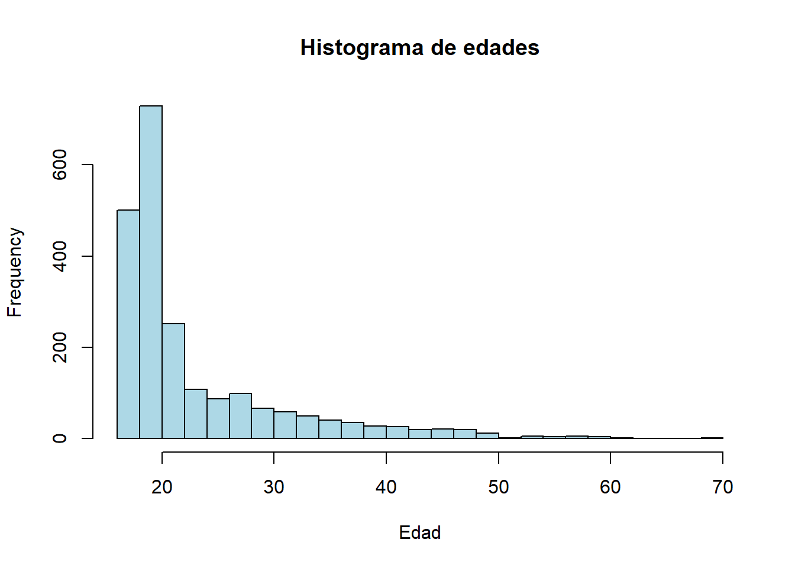
La mayoría de los estudiantes tienen entre 19 y 25 años al comenzar los estudios, con una mediana de 20 años.
#Tabla de frecuencias de las nacionalidades
data$Nacionality <- as.character(factor(data$Nacionality,levels = c(1,2,6,11,13,14,17,21,22,24,25,26,32,41,62,100,101,103,105,108,109),labels = c("PT","DE","ES","IT","NL","EN","LT","AO","CV","GN","MZ","ST","TR","BR","RO","MD","MX","UA","RU","CU","CO")))
f_nacionalidades <- sort(table(data$Nacionality),decreasing = TRUE)
f_nacionalidades <- round(prop.table(f_nacionalidades)*100,2)
f_nacionalidades
PT BR ES CV ST GN IT MD RU UA AO EN MZ
97.97 0.64 0.32 0.28 0.18 0.09 0.09 0.09 0.09 0.09 0.05 0.05 0.05 La nacionalidad predominante es portuguesa (PT) con un 97.97% de los estudiantes, seguida por Brasil (BR) con un 0.64%. Dado que la inmensa mayoría de los estudiantes son portugueses, inicialmente no tendremos en cuenta esta variable. En su lugar usaremos una binaria que indica si es internacional o no.
#Proporción de género
data$Gender_char <- as.character(factor(data$Gender,levels = c(1,0),labels = c("Hombre","Mujer")))
f_genero <- round(prop.table(table(data$Gender_char))*100,2)
f_genero
Hombre Mujer
36.46 63.54 #Contingencia entre género y variable objetivo
cont_genero <- table(data$Gender_char,data$Target)
cont_genero <- round(prop.table(cont_genero,1)*100,2)
cont_genero <- addmargins(cont_genero)[1:2,]
cont_genero
Dropout Enrolled Graduate Sum
Hombre 45.33 18.43 36.24 100.00
Mujer 25.72 17.75 56.52 99.99#Representamos estos datos en un grafico de barras acumulado
barplot(t(cont_genero[,1:3]), beside=FALSE, col=c("lightcoral","lightblue","lightgreen"), legend = colnames(cont_genero[,1:3]), main="Distribución de la variable objetivo por género", xlab="Género", ylab="Porcentaje")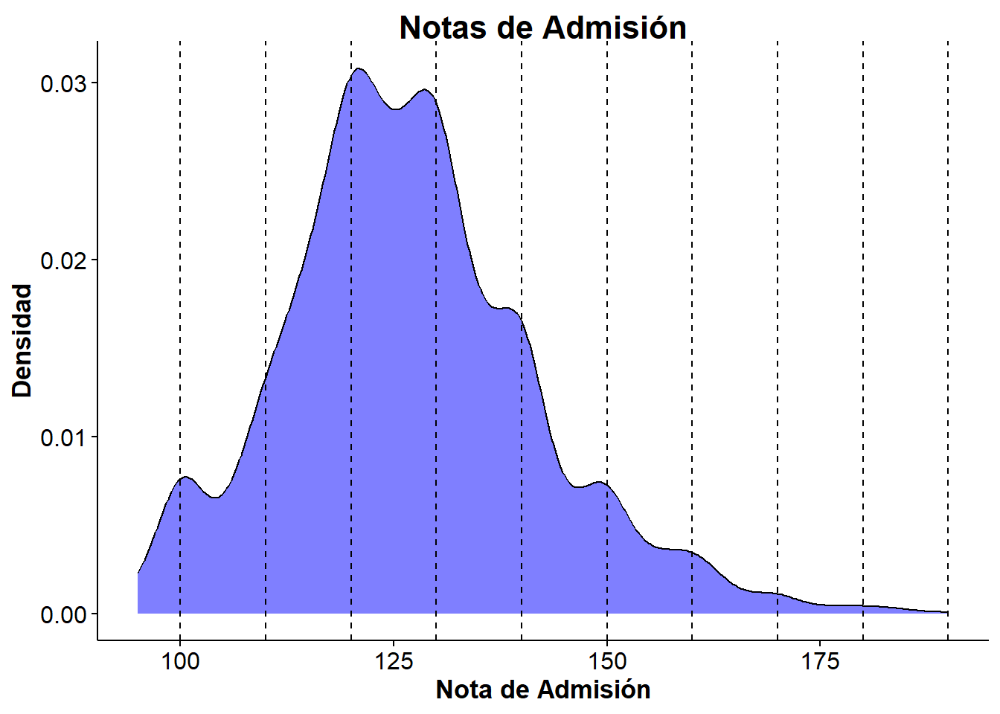
En cuanto al género, observamos una mayor presencia de mujeres, representando el 63.54% de los datos. Esto es mayor comparado con los datos publicados por la OCDE que indican que este porcentaje es el 54%. Esta diferencia se puede explicar por los grados elegidos para nuestros datos que pueden no ser representativos. También podemos observar que más hombres dejan los estudios (45.33%) respecto a las mujeres (25.72%).
#Resumen de las notas de entrada
summary(data$Admission.grade) Min. 1st Qu. Median Mean 3rd Qu. Max.
95.0 117.5 125.9 126.9 135.0 190.0 #Grafico de densidad de las notas de entrada
ggplot(data, aes(x = Admission.grade)) +
geom_density(fill = "blue", alpha = 0.5) +
geom_vline(xintercept = seq(ceiling(min(data$Admission.grade)/10)*10, max(data$Admission.grade), by = 10), linetype = "dashed") + labs(title = "Notas de Admisión", x = "Nota de Admisión", y = "Densidad")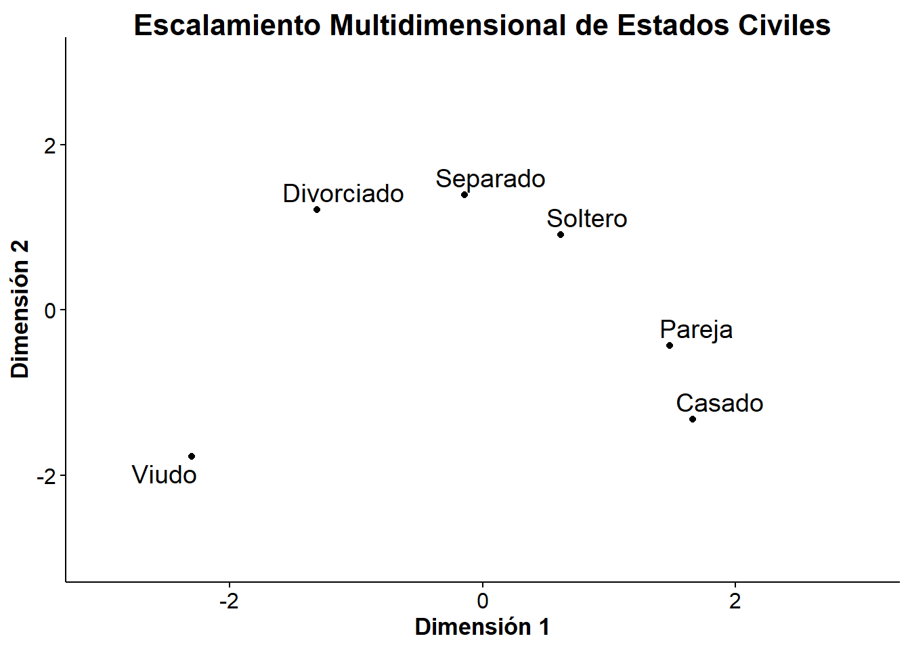
#Hacemos un histograma con las calificaciones en intervalos de 10
ggplot(data, aes(x = Admission.grade)) +
geom_histogram(binwidth = 10, fill = "lightblue", color = "black", alpha = 0.7) +
labs(title = "Histograma de Notas de Admisión", x = "Nota de Admisión", y = "Frecuencia")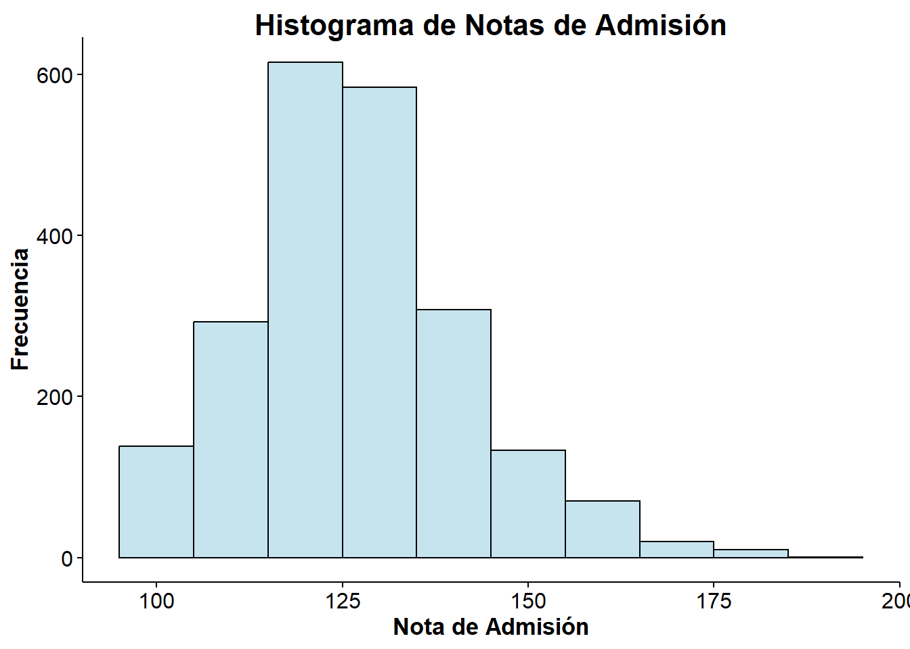
#Hacemos el grafico de correlación entre la nota de admisión y la nota obtenida en el primer semestre
ggplot(data[data$Curricular.units.1st.sem..grade.>0,],aes(x=Admission.grade,y=Curricular.units.1st.sem..grade.))+geom_point()+geom_smooth(method = lm,color="red",se = TRUE)+stat_cor(method = "pearson",label.x = 100,label.y = 20)`geom_smooth()` using formula = 'y ~ x'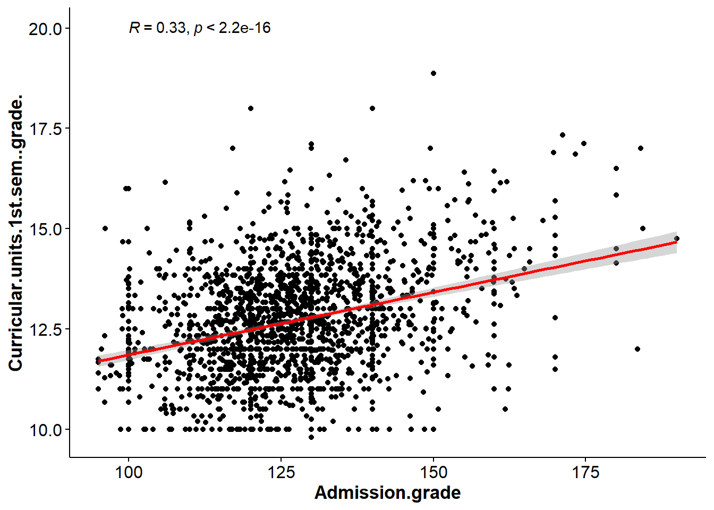
Respecto a las notas de admisión, podemos ver que las notas tienden a concentrarse en los múltiplos de 10, lo que sugiere una posible influencia de los sistemas de calificación. No existe una fuerte correlación entre la nota de admisión y los resultados obtenidos en el primer semestre, con un coeficiente r=0.33.
1.4 Matrices de distancias para variables categóricas
A continuación se muestran las matrices de distancias diseñadas para las variables categóricas más relevantes del conjunto de datos. Después, realizamos un escalamiento multidimensional, para obtener dos variables numéricas por cada variable categórica de modo que la distancia euclidea en el plano entre dos posibles valores de la variable categórica se corresponde con la distancia establecida en la matriz. Esto nos permite generar un nuevo dataframe donde todas las variables son numericas.
1.4.1 Estado civil
# Definir los nombres de los estados civiles
estados <- data.frame(id=c(1, 2, 3, 4, 5, 6), nombre=c(
"Soltero",
"Casado",
"Viudo",
"Divorciado",
"Pareja",
"Separado"
))
matriz_datos_estados <- c(
0, 3, 4, 2, 1, 2,
3, 0, 4, 4, 1, 3,
4, 4, 0, 3, 4, 4,
2, 4, 3, 0, 3, 1,
1, 1, 4, 3, 0, 3,
2, 3, 4, 1, 3, 0
)
matriz_distancias_estados <- matrix(
matriz_datos_estados,
nrow = 6,
byrow = TRUE,
dimnames = list(estados$id, estados$id)
)
# Escalamiento multidimensional
coordenadas_estados <- cmdscale(matriz_distancias_estados, k = 2)
colnames(coordenadas_estados) <- c("Estado1", "Estado2")
rownames(coordenadas_estados) <- estados$id
estados_numeric <- coordenadas_estados[data$Marital.status, ]
colnames(estados_numeric) <- c("Estado1","Estado2")
# Represetamos en el plano las coordenadas de los estados civiles con sus etiquetas
ggplot(coordenadas_estados, aes(x = Estado1, y = Estado2)) +
geom_point() +
geom_text_repel(aes(label = estados$nombre), size = 5) +
xlab("Dimensión 1") +
ylab("Dimensión 2") +
ggtitle("Escalamiento Multidimensional de Estados Civiles") +
xlim(-3, 3) +
ylim(-3, 3)
1.4.2 Grados
El criterio general utilizado para asignar las distancias entre los grados fue la similitud en el campo de estudio principal y la orientación profesional/académica. Se asignó una distancia de 1 (máxima similitud) a aquellos grados que, o bien son idénticos (salvo por la modalidad de asistencia), o pertenecen a la misma área (ej. dos ingenierías, dos grados de salud, dos diseños visuales). Se asignó distancias mayores (hasta 4) a medida que los grados provienen de campos completamente dispares (ej. Salud versus Ingeniería, o Agricultura versus Animación).
# Definir los nombres de los grados con su ID
grados <- data.frame(id = c(
33, 171, 8014, 9003,
9070, 9085, 9119, 9130,
9147, 9238, 9254, 9500,
9556, 9670, 9773,
9853, 9991), nombre = c("Biofuel Production Technologies", "Animation and Multimedia Design", "Social Service (evening attendance)", "Agronomy", "Communication Design", "Veterinary Nursing", "Informatics Engineering", "Equinculture", "Management", "Social Service", "Tourism", "Nursing", "Oral Hygiene", "Advertising and Marketing Management", "Journalism and Communication", "Basic Education", "Management (evening attendance)"))
# Definir la matriz de distancias entre los grados
matriz_datos_grados <- c(
0, 4, 3, 2, 4, 3, 1, 2, 3, 3, 3, 4, 4, 3, 4, 4, 3,
4, 0, 4, 4, 1, 4, 3, 4, 3, 4, 3, 4, 4, 2, 3, 4, 3,
3, 4, 1, 3, 4, 3, 4, 3, 2, 1, 2, 2, 3, 3, 3, 2, 2,
2, 4, 3, 0, 4, 2, 3, 1, 3, 3, 3, 3, 4, 3, 4, 4, 3,
4, 1, 4, 4, 0, 4, 3, 4, 3, 4, 3, 4, 4, 2, 3, 4, 3,
3, 4, 3, 2, 4, 0, 4, 1, 3, 3, 3, 1, 2, 4, 4, 4, 3,
1, 3, 4, 3, 3, 4, 0, 3, 3, 4, 3, 4, 4, 3, 3, 4, 3,
2, 4, 3, 1, 4, 1, 3, 0, 3, 3, 3, 3, 4, 3, 4, 4, 3,
3, 3, 2, 3, 3, 3, 3, 3, 1, 2, 1, 3, 4, 1, 3, 3, 1,
3, 4, 1, 3, 4, 3, 4, 3, 2, 0, 2, 2, 3, 3, 3, 2, 2,
3, 3, 2, 3, 3, 3, 3, 3, 1, 2, 0, 3, 4, 1, 3, 3, 1,
4, 4, 2, 3, 4, 1, 4, 3, 3, 2, 3, 0, 1, 4, 4, 3, 3,
4, 4, 3, 4, 4, 2, 4, 4, 4, 3, 4, 1, 0, 4, 4, 4, 4,
3, 2, 3, 3, 2, 4, 3, 3, 1, 3, 1, 4, 4, 0, 1, 3, 1,
4, 3, 3, 4, 3, 4, 3, 4, 3, 3, 3, 4, 4, 1, 0, 2, 3,
4, 4, 2, 4, 4, 4, 4, 4, 3, 2, 3, 3, 4, 3, 2, 0, 3,
3, 3, 2, 3, 3, 3, 3, 3, 1, 2, 1, 3, 4, 1, 3, 3, 0
)
# Crear la matriz en R
matriz_distancias_grados <- matrix(
matriz_datos_grados,
nrow = 17,
byrow = TRUE,
dimnames = list(grados$id, grados$id)
)
# Escalamiento multidimensional
coordenadas_grados <- cmdscale(matriz_distancias_grados, k = 2)
colnames(coordenadas_grados) <- c("Grados1", "Grados2")
rownames(coordenadas_grados) <- grados$id
grados_numeric <- coordenadas_grados[as.factor(data$Course), ]
colnames(grados_numeric)<-c("Grados1","Grados2")
# Represetamos en el plano las coordenadas de los grados con sus etiquetas
ggplot(coordenadas_grados, aes(x = Grados1, y = Grados2)) +
geom_point() +
geom_text_repel(aes(label = grados$nombre), size = 5) +
xlab("Dimensión 1") +
ylab("Dimensión 2") +
ggtitle("Escalamiento Multidimensional de Grados") +
xlim(-2, 2) +
ylim(-2, 2)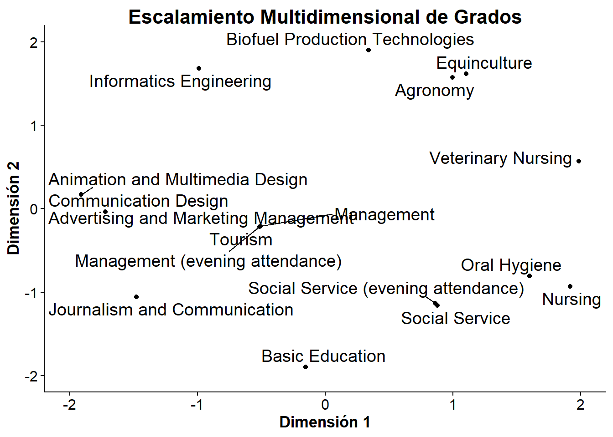
1.4.3 Cualificacion previa
La matriz de distancias para el análisis se generó basándose en la asignación de cada calificación a un Nivel Educativo ID (0 a 8 para niveles válidos).
El criterio de distancia es proporcional a la diferencia absoluta entre sus IDs de Nivel, pero se encuentra limitada a un máximo de 5.
\[D_{ij} = \min(|\text{ID}_i - \text{ID}_j|, 7)\]
| Código(s) | Calificación (Resumen) | Grado de Educación Aprox. | Nivel Educativo ID |
|---|---|---|---|
| 35, 36 | No Lee/Escribe | Analfabeto/Preescolar | 0 |
| 37 | Básica 1er Ciclo (4º/5º) | Primaria Incompleta | 1 |
| 11, 26, 38, 30, 29 | Secundaria Baja Incompleta (7º-9º Incomp.) | E.S.O. Incompleta | 2 |
| 19, 10, 12, 14, 27, 9, 15 | Secundaria Media Incompleta (10º-12º Incomp.) | Bachillerato Incompleto | 3 |
| 1, 18, 22, 13, 20, 25 | Secundaria Completa (12º Año, Cursos Técnicos) | Bachillerato/Secundaria Completa | 4 |
| 42, 39, 31, 33 | Superior Técnica/Post-Secundaria | Formación Profesional Superior/Técnico | 5 |
| 2, 3, 40, 41 | Superior (Grado, Licenciatura, 1er Ciclo) | Grado Universitario | 6 |
| 4, 43 | Superior (Máster, 2º Ciclo) | Posgrado (Máster) | 7 |
| 5, 44 | Superior (Doctorado, 3er Ciclo) | Posgrado (Doctorado) | 8 |
| 6, 34 | Frecuencia Superior, Desconocido | Nivel Especial o Indefinido | 9 (Especial) |
Para el escalado multidimensional, elegiremos tres dimensiones (k=3) para capturar mejor las diferencias entre las cualificaciones.
# Procesar el string para crear un data frame
Cualif_raw =
"1 - Secondary Education - 12th Year of Schooling or Eq.
2 - Higher Education - Bachelor's Degree
3 - Higher Education - Degree
4 - Higher Education - Master's
5 - Higher Education - Doctorate
6 - Frequency of Higher Education
9 - 12th Year of Schooling - Not Completed
10 - 11th Year of Schooling - Not Completed
11 - 7th Year (Old)
12 - Other - 11th Year of Schooling
13 - 2nd year complementary high school course
14 - 10th Year of Schooling
15 - 10th year of schooling - not completed
18 - General commerce course
19 - Basic Education 3rd Cycle (9th/10th/11th Year) or Equiv.
20 - Complementary High School Course
22 - Technical-professional course
25 - Complementary High School Course - not concluded
26 - 7th year of schooling
27 - 2nd cycle of the general high school course
29 - 9th Year of Schooling - Not Completed
30 - 8th year of schooling
31 - General Course of Administration and Commerce
33 - Supplementary Accounting and Administration
34 - Unknown
35 - Can't read or write
36 - Can read without having a 4th year of schooling
37 - Basic education 1st cycle (4th/5th year) or equiv.
38 - Basic Education 2nd Cycle (6th/7th/8th Year) or Equiv.
39 - Technological specialization course
40 - Higher education - degree (1st cycle)
41 - Specialized higher studies course
42 - Professional higher technical course
43 - Higher Education - Master (2nd cycle)
44 - Higher Education - Doctorate (3rd cycle)"
cualif_lines <- unlist(strsplit(Cualif_raw, "\n"))
cualif_lines <- sub(" - ","|",cualif_lines)
cualif_lines <- strsplit(cualif_lines, "|",fixed=TRUE)
cualificaciones <- data.frame(t(data.frame(cualif_lines)))
colnames(cualificaciones) <- c("ID", "Cualificación")
rownames(cualificaciones) <- NULL
cualificaciones$ID <- as.numeric(trimws(cualificaciones$ID))
# Asignar niveles educativos a cada código de cualificación
cualificaciones$Nivel <- c(4,6,6,7,8,9,3,3,2,3,4,3,3,4,3,4,4,4,2,3,2,2,5,5,9,0,0,1,2,5,6,6,5,7,8)
# Inicializar la matriz de distancias
matriz_distancias_cualif <- matrix(0, nrow = length(cualificaciones$ID) , ncol = length(cualificaciones$ID), dimnames = list(cualificaciones$ID, cualificaciones$ID))
for (i in c(1:length(cualificaciones$ID))) {
for (j in c(1:length(cualificaciones$ID))) {
distancia <- abs(cualificaciones$Nivel[i] - cualificaciones$Nivel[j])
matriz_distancias_cualif[i, j] <- min(distancia, 7)
}
}
# Escalamiento multidimensional con k=3
coordenadas_cualif <- cmdscale(matriz_distancias_cualif, k = 3)
rownames(coordenadas_cualif)<- cualificaciones$ID
# Asignar las nuevas variables numéricas a las cualificaciones previas de estudiantes y padres
cualif_estudiante_numeric <- coordenadas_cualif[as.factor(data$Previous.qualification), ]
colnames(cualif_estudiante_numeric)<-c("CualifE1","CualifE2","CualifE3")
cualif_padre_numeric <- coordenadas_cualif[as.factor(data$Father.s.qualification), ]
colnames(cualif_padre_numeric)<-c("CualifP1","CualifP2","CualifP3")
cualif_madre_numeric <- coordenadas_cualif[as.factor(data$Mother.s.qualification), ]
colnames(cualif_madre_numeric)<-c("CualifM1","CualifM2","CualifM3")1.4.4 Ocupación de los padres y previa de los estudiantes
La matriz de distancias se genera asignando a cada ocupación un Nivel Ocupacional de 1 a 9, basado en la complejidad y cualificación requerida. Las ocupaciones especiales (0, 10, 90, 99) son excluidas del cálculo de distancia.
El criterio de distancia es la diferencia absoluta entre sus OcupIDs, limitada a un máximo de 5.
\[D_{ij} = \min(|\text{OcupID}_i - \text{OcupID}_j|, 5)\]
Esta tabla resume la clasificación jerárquica utilizada para establecer los Niveless:
| Código(s) | Ocupación (Resumen) | Nivel de Complejidad | Nivel |
|---|---|---|---|
| 1, 112, 114 | Representantes del Poder Legislativo y Ejecutivo, Directores, Gerentes y Ejecutivos | Alta Dirección y Gestión | 1 |
| 2, 121, 122, 123, 124, 125 | Especialistas en Actividades Intelectuales y Científicas | Profesiones Científicas y Académicas | 2 |
| 3, 131, 132, 134, 135 | Técnicos y Profesionales de Nivel Intermedio | Nivel Técnico Especializado | 3 |
| 4, 141, 143, 144 | Personal Administrativo (Oficina, Secretarías, Contabilidad) | Soporte Administrativo | 4 |
| 5, 151, 152, 153, 154, 195 | Servicios Personales, Vendedores, Protección y Seguridad | Servicios y Ventas (No cualificado a intermedio) | 5 |
| 6, 161, 163, 192 | Agricultores y Trabajadores Calificados en Agricultura, Pesca y Silvicultura | Trabajo Primario Calificado | 6 |
| 7, 171, 172, 173, 174, 175 | Trabajadores Calificados en Industria, Construcción y Artesanía | Trabajo Industrial y Construcción Calificado | 7 |
| 8, 181, 182, 183 | Operadores de Instalaciones y Máquinas y Montadores | Operadores y Conductores | 8 |
| 9, 191, 193, 194 | Trabajadores No Cualificados (Limpieza, Ayudantes, etc.) | Nivel Básico No Calificado | 9 |
| 0 | Estudiante | Sin Clasificación Laboral | 20 (Especial) |
| 10, 101, 102, 103 | Profesiones de las Fuerzas Armadas | Ocupación Única/Militar | 30 (Especial) |
| 90, 99 | Otra Situación / Vacío | Sin Clasificación / Desconocido | 99 (Excluido) |
# Procesar el string para crear un data frame
Ocupaciones_raw =
"0 - Student
1 - Representatives of the Legislative Power and Executive Bodies, Directors, Directors and Executive Managers
2 - Specialists in Intellectual and Scientific Activities
3 - Intermediate Level Technicians and Professions
4 - Administrative staff
5 - Personal Services, Security and Safety Workers and Sellers
6 - Farmers and Skilled Workers in Agriculture, Fisheries and Forestry
7 - Skilled Workers in Industry, Construction and Craftsmen
8 - Installation and Machine Operators and Assembly Workers
9 - Unskilled Workers
10 - Armed Forces Professions
90 - Other Situation
99 - (blank)
101 - Armed Forces Officers
102 - Armed Forces Sergeants
103 - Other Armed Forces personnel
112 - Directors of administrative and commercial services
114 - Hotel, catering, trade and other services directors
121 - Specialists in the physical sciences, mathematics, engineering and related techniques
122 - Health professionals
123 - Teachers
124 - Specialists in finance, accounting, administrative organization, public and commercial relations
125 - Specialists in information and communication technologies (ICT)
131 - Intermediate level science and engineering technicians and professions
132 - Technicians and professionals, of intermediate level of health
134 - Intermediate level technicians from legal, social, sports, cultural and similar services
135 - Information and communication technology technicians
141 - Office workers, secretaries in general and data processing operators
143 - Data, accounting, statistical, financial services and registry-related operators
144 - Other administrative support staff
151 - personal service workers
152 - Sellers
153 - Personal care workers and the like
154 - Protection and security services personnel
161 - Market-oriented farmers and skilled agricultural and animal production workers
163 - Farmers, livestock keepers, fishermen, hunters and gatherers, subsistence
171 - Skilled construction workers and the like, except electricians
172 - Skilled workers in metallurgy, metalworking and similar
173 - Skilled workers in printing, precision instrument manufacturing, jewelers, artisans and the like
174 - Skilled workers in electricity and electronics
175 - Workers in food processing, woodworking, clothing and other industries and crafts
181 - Fixed plant and machine operators
182 - Assembly workers
183 - Vehicle drivers and mobile equipment operators
191 - Cleaning workers
192 - Unskilled workers in agriculture, animal production, fisheries and forestry
193 - Unskilled workers in extractive industry, construction, manufacturing and transport
194 - Meal preparation assistants
195 - Street vendors (except food) and street service providers"
ocupaciones_lines <- unlist(strsplit(Ocupaciones_raw, "\n"))
ocupaciones_lines <- strsplit(ocupaciones_lines, " - ")
ocupaciones <- data.frame(t(data.frame(ocupaciones_lines)))
colnames(ocupaciones) <- c("ID", "Ocupacion")
rownames(ocupaciones) <- NULL
ocupaciones$ID <- as.numeric(trimws(ocupaciones$ID))
# Asignar niveles ocupacionales a cada código de ocupación
ocupaciones$Nivel <- c(
20, 1, 2, 3, 4, 5, 6, 7, 8, 9,
30, 99, 99, 30, 30, 30,
1, 1, 2, 2, 2, 2, 2, 3, 3, 3, 3,
4, 4, 4, 5, 5, 5, 5, 6, 6, 7, 7, 7, 7, 7,
8, 8, 8, 9, 6, 9, 9, 5
)
# Inicializar la matriz de distancias
matriz_distancias_profesiones <- matrix(0, nrow = length(ocupaciones$ID) , ncol = length(ocupaciones$ID), dimnames = list(ocupaciones$ID, ocupaciones$ID))
for (i in c(1:length(ocupaciones$ID))) {
for (j in c(1:length(ocupaciones$ID))) {
distancia <- abs(ocupaciones$Nivel[i] - ocupaciones$Nivel[j])
matriz_distancias_profesiones[i, j] <- min(distancia, 5)
}
}
# Escalamiento multidimensional con k=3
coordenadas_profesiones <- cmdscale(matriz_distancias_profesiones, k = 3)
colnames(coordenadas_profesiones) <- c("Prof1", "Prof2", "Prof3")
rownames(coordenadas_profesiones) <- ocupaciones$ID
# Asignar las nuevas variables numéricas a las ocupaciones de los padres
prof_madre_numeric <- coordenadas_profesiones[as.factor(data$Mother.s.occupation), ]
colnames(prof_madre_numeric)<-c("ProfM1","ProfM2","ProfM3")
prof_padre_numeric <- coordenadas_profesiones[as.factor(data$Father.s.occupation), ]
colnames(prof_padre_numeric)<-c("ProfP1","ProfP2","ProfP3")2 Reducción de dimensionalidad:
Ya hemos conseguido transformar todas las variables categóricas en numéricas. Ahora podemos crear un nuevo dataframe que contenga todas las variables numéricas para proceder a la reducción de dimensionalidad. De nuestras 36 variables originales (sin contar la objetivo) hemos descartado 9 variables:
- Nacionalidad (casi todos portugueses). Usamos simplemente la clasificación binaria internacional/no internacional.
- Modo de aplicación
- Estado civil (categorica)
- Grado (categorica)
- Cualificaciónes previas del estudiante, padre y madre (son categoricas)
- Ocupaciónes del padre y madre (son categoricas)
Por tanto tenemos 28 variables numéricas del dataframe original. A estas hemos añadido:
- 2 variables numéricas del estado civil
- 2 variables numéricas del grado
- 3 variables numéricas por cada cualificación previa (9 en total)
- 3 variables numéricas por cada ocupación de los padres (6 en total)
En total tenemos \(27 + 2 + 2 + 9 + 6 = 46\) variables numéricas. Constriumos un dataframe con todas estas variables:
datos_numericos<-data.frame(estados_numeric,data$Application.order,grados_numeric,data$Daytime.evening.attendance.,cualif_estudiante_numeric,data$Previous.qualification..grade.,cualif_madre_numeric,cualif_padre_numeric,prof_madre_numeric,prof_padre_numeric,data[13:36])
rownames(datos_numericos) <- rownames(data)Vamos a ver la matriz de correlaciones de las variables realacionadas con las notas y la edad:
cor_matrix <- cor(data.frame(data$Previous.qualification..grade.,data$Admission.grade,data$Age.at.enrollment,data$Curricular.units.1st.sem..grade.,data$Curricular.units.2nd.sem..grade.))
# Visualizar correlaciones
corrplot(cor_matrix, method = "color", type = "upper",
tl.col = "black", tl.srt = 45,
addCoef.col = "black", number.cex = 0.7)
Se puede ver que la nota del primer semestre están fuertemente relacionadas con las del segundo.
2.1 Análisis de componentes principales (PCA)
Realizamos un análisis de componentes principales con prcomp. Es importante escalar los datos para que todas las variables tengan la misma importancia en el análisis.
# PCA usando prcomp
pca_result <- prcomp(datos_numericos, scale. = TRUE)
# Resumen
summary(pca_result)Importance of components:
PC1 PC2 PC3 PC4 PC5 PC6 PC7
Standard deviation 2.5062 1.88553 1.83024 1.51429 1.41100 1.33878 1.30223
Proportion of Variance 0.1365 0.07729 0.07282 0.04985 0.04328 0.03896 0.03687
Cumulative Proportion 0.1365 0.21383 0.28665 0.33650 0.37978 0.41874 0.45561
PC8 PC9 PC10 PC11 PC12 PC13 PC14
Standard deviation 1.27291 1.22670 1.19298 1.12968 1.11808 1.08805 1.05644
Proportion of Variance 0.03522 0.03271 0.03094 0.02774 0.02718 0.02574 0.02426
Cumulative Proportion 0.49083 0.52354 0.55448 0.58223 0.60940 0.63514 0.65940
PC15 PC16 PC17 PC18 PC19 PC20 PC21
Standard deviation 1.02378 1.00570 0.98419 0.97248 0.94997 0.93666 0.9151
Proportion of Variance 0.02279 0.02199 0.02106 0.02056 0.01962 0.01907 0.0182
Cumulative Proportion 0.68219 0.70417 0.72523 0.74579 0.76541 0.78448 0.8027
PC22 PC23 PC24 PC25 PC26 PC27 PC28
Standard deviation 0.88591 0.85284 0.80197 0.79025 0.77104 0.75306 0.73897
Proportion of Variance 0.01706 0.01581 0.01398 0.01358 0.01292 0.01233 0.01187
Cumulative Proportion 0.81975 0.83556 0.84954 0.86312 0.87604 0.88837 0.90024
PC29 PC30 PC31 PC32 PC33 PC34 PC35
Standard deviation 0.71294 0.69850 0.69457 0.66397 0.63750 0.58572 0.54298
Proportion of Variance 0.01105 0.01061 0.01049 0.00958 0.00884 0.00746 0.00641
Cumulative Proportion 0.91129 0.92190 0.93238 0.94197 0.95080 0.95826 0.96467
PC36 PC37 PC38 PC39 PC40 PC41 PC42
Standard deviation 0.51617 0.47317 0.46874 0.42176 0.40331 0.39446 0.38052
Proportion of Variance 0.00579 0.00487 0.00478 0.00387 0.00354 0.00338 0.00315
Cumulative Proportion 0.97046 0.97533 0.98011 0.98397 0.98751 0.99089 0.99404
PC43 PC44 PC45 PC46
Standard deviation 0.35380 0.30278 0.19026 0.14541
Proportion of Variance 0.00272 0.00199 0.00079 0.00046
Cumulative Proportion 0.99676 0.99875 0.99954 1.00000saveRDS(pca_result,file="pca_result.rds")
# Visualizar varianza explicada
fviz_eig(pca_result, addlabels = TRUE, ylim = c(0, 20),
main = "Varianza explicada por componente")Warning in geom_bar(stat = "identity", fill = barfill, color = barcolor, :
Ignoring empty aesthetic: `width`.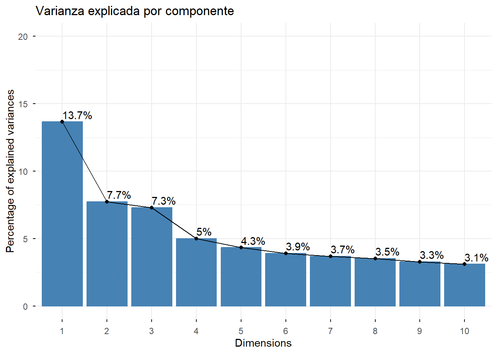
#visualizar la varianza acumulada dada por data.frame(summary(pca_result)$importance[3,]
varianza_acumulada <- data.frame(Componente = 1:length(summary(pca_result)$importance[3,]),
VarianzaAcumulada = summary(pca_result)$importance[3,])
ggplot(varianza_acumulada, aes(x = Componente, y = VarianzaAcumulada)) +
geom_line(color = "red") +
geom_point(color = "red") +
scale_y_continuous(labels = scales::percent_format(accuracy = 1)) +
labs(title = "Varianza Acumulada por Componentes Principales",
x = "Número de Componentes",
y = "Varianza Acumulada") + geom_hline(yintercept = 0.8, linetype = "dashed", color = "blue") + geom_vline(xintercept = 21, linetype = "dashed", color = "green")
#Para cada variable del PCA vemos las variables que contribuyen mas que un umbral (por ejempo 0.1)
fviz_contrib(pca_result, choice = "var", axes = 1, top = 20) + ggtitle("Contribuciones de las variables al PC1")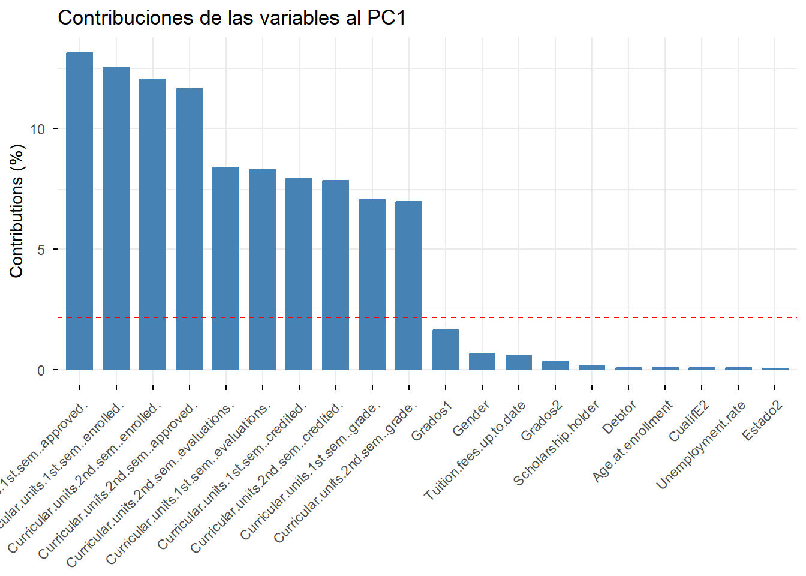
fviz_contrib(pca_result, choice = "var", axes = 2, top = 20) + ggtitle("Contribuciones de las variables al PC2")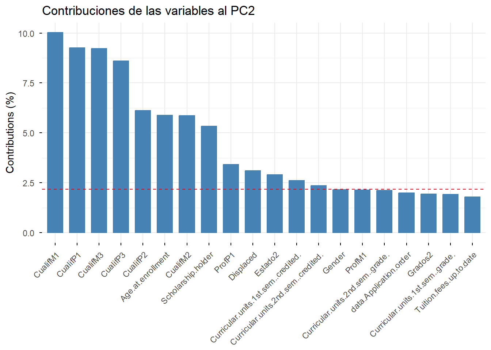
fviz_contrib(pca_result, choice = "var", axes = 3, top = 20) + ggtitle("Contribuciones de las variables al PC3")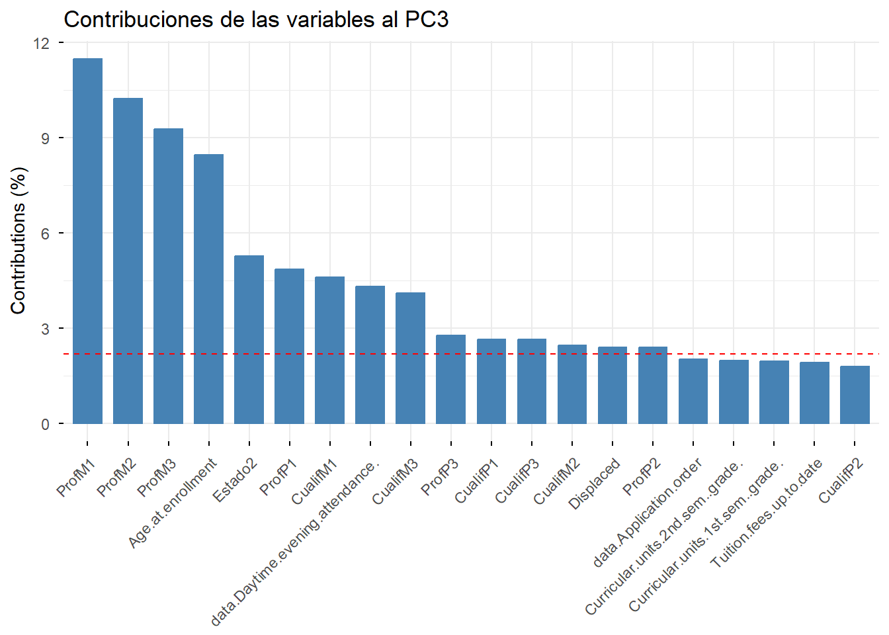
# Tomamos las dos primeras componentes principales y representamos las observaciones con colores dependiendo del valor de la variable objetivo
pca_data <- data.frame(pca_result$x[, 1:2], Target = data$Target)
ggplot(pca_data, aes(x = PC1, y = PC2, color = Target)) +
geom_point(alpha = 0.7) +
labs(title = "PCA: Primeras dos Componentes Principales", x = "Componente Principal 1", y = "Componente Principal 2")+geom_vline(xintercept = -1)+geom_vline(xintercept = -5)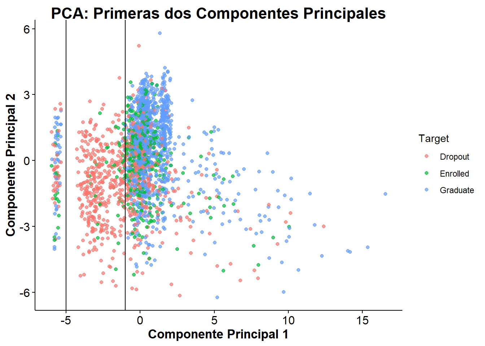
La línea de las gráficas de las contribuciones indica el umbral de contribución media (100% dividido por el número de variables). Las variables que superan esta línea son las que tienen una contribución significativa a la componente principal correspondiente.
2.2 Outliers con las variables del PCA
Vemos que la primera componentes principal permite una separación inicial aceptable de las clases. Sin embargo, tenemos una serie de datos con un PCA1 inusualmente bajo (por debajo de -5). Veamos que ocurre:
pca_outliers <- data[rownames(pca_data %>% filter(PC1 <= -5)),]
dim(pca_outliers)[1] 93 38unique(pca_outliers$Course)[1] 171length(data[data$Course==171,1])[1] 108table(pca_outliers$Target)
Dropout Enrolled Graduate
36 16 41 IDS_outliers <- rownames(pca_data %>% filter(PC1 <= -5))
unique(pca_outliers[,names(sort(abs(pca_result$rotation[,"PC1"]), decreasing =TRUE)[1:10])]) Curricular.units.1st.sem..approved. Curricular.units.1st.sem..enrolled.
21 0 0
Curricular.units.2nd.sem..enrolled. Curricular.units.2nd.sem..approved.
21 0 0
Curricular.units.2nd.sem..evaluations.
21 0
Curricular.units.1st.sem..evaluations. Curricular.units.1st.sem..credited.
21 0 0
Curricular.units.2nd.sem..credited. Curricular.units.1st.sem..grade.
21 0 0
Curricular.units.2nd.sem..grade.
21 0Vemos que estos datos corresponden a 93 de los 108 estudiantes del grado “Animation and Multimedia Design” que no tienen datos academicos propiamente dichos como asignaturas matriculadas o examenes realizados que contribuyen a la primera componenete principal. Los consideraremos outliers, al no tener datos de las variables más determinantes.
3 Clustering con K-means
3.1 Con las variables originales
En primer lugar vamos a determinar el número óptimo de clusters utilizando el método del codo y el método de la silueta. Debemos escalar primero los datos para que todas las variables tengan el mismo peso.
# Determinar el número óptimo de clusters
datos_numericos_limpios<-datos_numericos[!rownames(datos_numericos) %in% IDS_outliers,]
datos_scale_limpios<-scale(datos_numericos_limpios)
media_limpios <- colMeans(datos_numericos_limpios)
sd_limpios <- apply(datos_numericos_limpios, 2, sd)
fviz_nbclust(datos_scale_limpios,kmeans,method = "wss")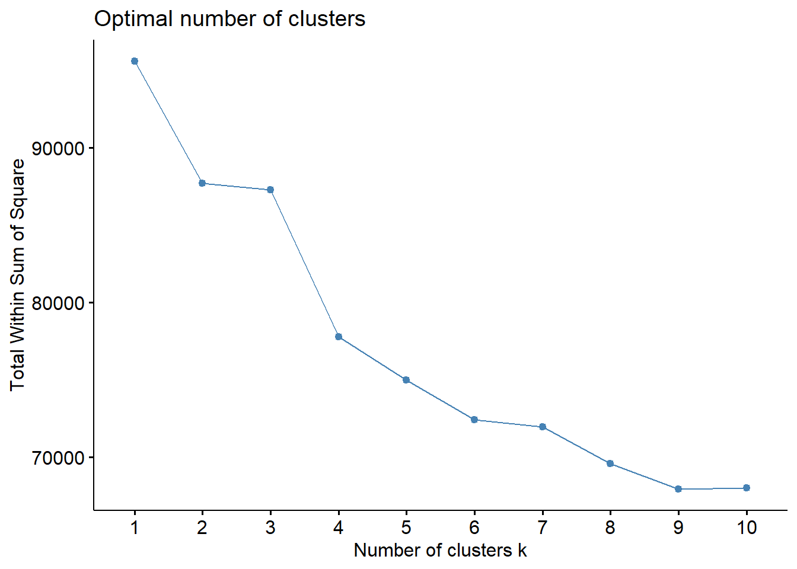
fviz_nbclust(datos_scale_limpios,kmeans,method = "silhouette")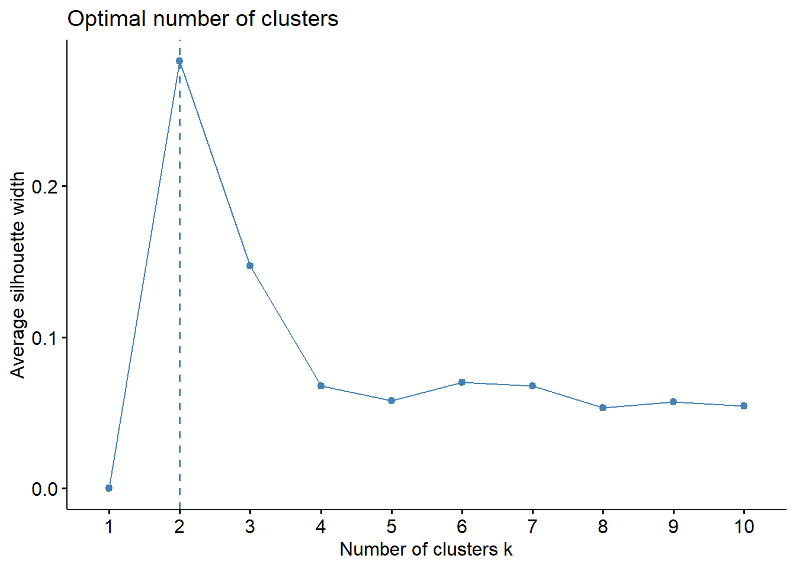
# Aplicar K-means con el número óptimo de clusters (por ejemplo, 3)
kmeans_result <- kmeans(datos_scale_limpios[], centers = 3, nstart = 30)
data_cluster <- data.frame(pca_result$x[pca_result$x[,1]>=-5,1:2]) %>% mutate(cluster=factor(kmeans_result$cluster))
data_sample <- data_cluster %>% group_by(cluster)%>% slice_sample(n=30,replace=FALSE) %>% ungroup()
sampled_cluster_object <- list(
data = data_sample[, 1:2], # Select only the features (the original data columns)
cluster = data_sample$cluster # Select the cluster assignments for the sample
)
fviz_cluster(
object = sampled_cluster_object,
data = sampled_data[, 1:2], # Pass the original features of the sampled data
geom = "point", # Plot points (you can add "text" if needed)
ellipse.type = "convex", # Adds a normal distribution ellipse
main = paste("fviz_cluster Plot - Sampled (n =", 20 , "per cluster)")
)
# Comparar con etiquetas reales
tabla_comparacion <- table(Cluster = kmeans_result$cluster,objetivo=data[!rownames(data) %in% IDS_outliers,]$Target )
tabla_comparacion<- addmargins(tabla_comparacion)[,1:4]
tabla_comparacion[1,]<-100*tabla_comparacion[1,]/tabla_comparacion[1,4]
tabla_comparacion[2,]<-100*tabla_comparacion[2,]/tabla_comparacion[2,4]
tabla_comparacion[3,]<-100*tabla_comparacion[3,]/tabla_comparacion[3,4]
tabla_comparacion[4,]<-100*tabla_comparacion[4,]/tabla_comparacion[4,4]
print(tabla_comparacion) objetivo
Cluster Dropout Enrolled Graduate Sum
1 93.08642 6.91358 0.00000 100.00000
2 24.81203 13.53383 61.65414 100.00000
3 17.39130 21.34977 61.25892 100.00000
Sum 32.61183 18.03752 49.35065 100.00000metricas <- evaluar_clasificador_binario(
pred = kmeans_result$cluster,
real = data[!rownames(data) %in% IDS_outliers,]$Target,
pos_pred = c(2,3),
neg_pred = c(1),
pos_real = c("Graduate","Enrolled"),
neg_real = c("Dropout")
)
metricas$matriz_confusion
Predicción
Real Positivo Negativo Sum
Positivo 1373 28 1401
Negativo 301 377 678
Sum 1674 405 2079
$metricas
precision recall f1_score accuracy error specificity
0.8201912 0.9800143 0.8930081 0.8417508 0.1582492 0.5560472
npv
0.9308642 La matriz de confusión muestra que el modelo clasifica correctamente la mayoría de los positivos reales (1373), lo que se traduce en un recall elevado (0.9800143). La precision es igualmente alta (0.8201912), aunque se observa la presencia de falsos positivos (301). El F1-score (0.8930081) refleja un buen equilibrio entre ambas métricas. No obstante, la capacidad para identificar correctamente la clase negativa es más limitada, como indica la specificity (0.5560472), lo que hace que la accuracy global (0.8417508) sea moderada.
4 Construcción y validación de modelos
Primero necesitamos preparar los datos de prueba o los nuevos para validar y usar el modelo. Necesitamos convertir las variables caregóricas en numéricas usando las mismas transformaciones que para los datos de entrenamiento, además hay que detectar si son outliers. La siguiente función toma un conjunto de datos, los convierte a numéricos y detecta y elimina los outliers avisando previamente.
es_outlier <- function(x_new, pca_model, umbral = -5) {
pc1 <- predict(pca_model, newdata = x_new)[, 1]
return(pc1 < umbral)
}
preparar_datos_para_modelo <- function(nuevos_datos, resultado_PCA) {
# Convertir variables categóricas a numéricas usando las mismas transformaciones
estados_numeric_nuevos <- coordenadas_estados[nuevos_datos$Marital.status, ]
colnames(estados_numeric_nuevos) <- c("Estado1","Estado2")
grados_numeric_nuevos <- coordenadas_grados[as.factor(nuevos_datos$Course), ]
colnames(grados_numeric_nuevos)<-c("Grados1","Grados2")
cualif_estudiante_numeric_nuevos <- coordenadas_cualif[as.factor(nuevos_datos$Previous.qualification), ]
colnames(cualif_estudiante_numeric_nuevos)<-c("CualifE1","CualifE2","CualifE3")
cualif_padre_numeric_nuevos <- coordenadas_cualif[as.factor(nuevos_datos$Father.s.qualification), ]
colnames(cualif_padre_numeric_nuevos)<-c("CualifP1","CualifP2","CualifP3")
cualif_madre_numeric_nuevos <- coordenadas_cualif[as.factor(nuevos_datos$Mother.s.qualification), ]
colnames(cualif_madre_numeric_nuevos)<-c("CualifM1","CualifM2","CualifM3")
prof_madre_numeric_nuevos <- coordenadas_profesiones[as.factor(nuevos_datos$Mother.s.occupation), ]
colnames(prof_madre_numeric_nuevos)<-c("ProfM1","ProfM2","ProfM3")
prof_padre_numeric_nuevos <- coordenadas_profesiones[as.factor(nuevos_datos$ Father.s.occupation), ]
colnames(prof_padre_numeric_nuevos)<-c("ProfP1","ProfP2","ProfP3")
# Crear el nuevo dataframe numérico
datos_numericos_nuevos<-data.frame(estados_numeric_nuevos,nuevos_datos$Application.order,grados_numeric_nuevos,nuevos_datos$Daytime.evening.attendance.,cualif_estudiante_numeric_nuevos,nuevos_datos$Previous.qualification..grade.,cualif_madre_numeric_nuevos,cualif_padre_numeric_nuevos,prof_madre_numeric_nuevos,prof_padre_numeric_nuevos,nuevos_datos[13:36])
rownames(datos_numericos_nuevos) <- rownames(nuevos_datos)
colnames(datos_numericos_nuevos) <- colnames(datos_numericos)
#Detectamos los outiers con la función es_outlier y los eliminamos avisando
outliers_indices <- which(es_outlier(datos_numericos_nuevos, resultado_PCA))
if (length(outliers_indices) > 0) {
cat("Se han detectado", length(outliers_indices), "outliers. Serán eliminados del conjunto de datos.\n")
datos_numericos_nuevos <- datos_numericos_nuevos[-outliers_indices, ]
} else {
cat("No se han detectado outliers en los nuevos datos.\n")
}
return(datos_numericos_nuevos)
}Ahora podemos usar esta función para preparar los datos de validación y luego aplicar los modelos que queramos.
# Preparar los datos de validación
datos_numericos_validation <- preparar_datos_para_modelo(validation_data, pca_result)Se han detectado 43 outliers. Serán eliminados del conjunto de datos.4.1 Validación del modelo K-means
Para este modelo vamos a predecir a que cluster de los calculados anteriormente pretenecen los datos en base a la distancia con el centroide de cada cluster.
# Calcular distancias a los centroides
distancias_centroides <- as.matrix(dist(rbind(kmeans_result$centers, scale(datos_numericos_validation,center = media_limpios,scale = sd_limpios))))
distancias_centroides <- distancias_centroides[-(1:nrow(kmeans_result$centers)), 1:nrow(kmeans_result$centers)]
# Asignar clusters basándose en la distancia mínima
predicciones_kmeans <- apply(distancias_centroides, 1, which.min)
# Evaluar el modelo
evaluar_clasificador_binario(
pred = predicciones_kmeans,
real = validation_data[rownames(datos_numericos_validation), ]$Target,
pos_pred = c(1,3),
neg_pred = c(2),
pos_real = c("Graduate","Enrolled"),
neg_real = c("Dropout")
)$matriz_confusion
Predicción
Real Positivo Negativo Sum
Positivo 692 60 752
Negativo 315 22 337
Sum 1007 82 1089
$metricas
precision recall f1_score accuracy error specificity
0.6871897 0.9202128 0.7868107 0.6556474 0.3443526 0.0652819
npv
0.2682927 4.2 Knn (K nearest neighbours)
Seguimos con los K vecinos más cercanos
pred_knn <- knn(train = datos_scale_limpios,
cl = data[!rownames(data) %in% IDS_outliers,]$Target,
test = scale(datos_numericos_validation,center = media_limpios,scale = sd_limpios),
k = 3)
evaluar_clasificador_binario(
pred = pred_knn,
real = validation_data[rownames(datos_numericos_validation), ]$Target,
pos_pred = c("Graduate","Enrolled"),
neg_pred = c("Dropout"),
pos_real = c("Graduate","Enrolled"),
neg_real = c("Dropout")
)$matriz_confusion
Predicción
Real Positivo Negativo Sum
Positivo 690 62 752
Negativo 141 196 337
Sum 831 258 1089
$metricas
precision recall f1_score accuracy error specificity
0.8303249 0.9175532 0.8717625 0.8135904 0.1864096 0.5816024
npv
0.7596899 4.3 Árboles de decisión
Para este modelo no necesitamos que las variables sean numéricas por lo que las podemos hacer con las originales. De cualquier modo eliminamos los outliers que había.
X_train <- data[setdiff(rownames(data),IDS_outliers), c(1:7, 9:36)]
y_train <- data[setdiff(rownames(data),IDS_outliers), "Target"]
X_validation <- validation_data[rownames(datos_numericos_validation), c(1:7, 9:36)]
y_validation <- validation_data[rownames(datos_numericos_validation), "Target"]
# Entrenar el árbol de decisión
arbol_modelo <- rpart(Target ~ ., data = data.frame(X_train, Target = y_train), method = "class")
# Predecir en los datos de validación
pred_arbol <- predict(arbol_modelo, newdata = X_validation, type = "class")
# Evaluar el modelo
evaluar_clasificador_binario(
pred = pred_arbol,
real = y_validation,
pos_pred = c("Graduate","Enrolled"),
neg_pred = c("Dropout"),
pos_real = c("Graduate","Enrolled"),
neg_real = c("Dropout")
)$matriz_confusion
Predicción
Real Positivo Negativo Sum
Positivo 668 84 752
Negativo 87 250 337
Sum 755 334 1089
$metricas
precision recall f1_score accuracy error specificity
0.8847682 0.8882979 0.8865295 0.8429752 0.1570248 0.7418398
npv
0.7485030 rpart.plot(
arbol_modelo,
type = 2,
extra = 104,
fallen.leaves = TRUE
)
El árbol de decisión identifica el número de asignaturas aprobadas en el segundo semestre como el factor determinante del abandono académico. A partir de este umbral, variables administrativas como el pago de tasas y la participación en evaluaciones refinan la clasificación. El identificador del grado (Course), aunque conceptualmente es una variable categórica, es tratado por el árbol como numérica y se utiliza en niveles más profundos para discriminar entre estudiantes que finalmente se gradúan y aquellos que permanecen matriculados. Si bien esta interpretación no es estrictamente correcta desde el punto de vista semántico, su efecto es secundario y no afecta al objetivo principal del estudio, centrado en la identificación temprana de estudiantes con riesgo de abandono.
El modelo clasifica rapidamente a los estudiantes que con bastante seguridad dejen sus estudios (por tener menos de 4 asignaturas aprobadas en el segundo semestre) y a los que con seguridad se gradúen (por tener 6 o más asignaturas aprobadas). El resto de estudiantes son clasificados en función de variables administrativas que pueden ser indicativas de su compromiso académico, como el pago de tasas o la participación en evaluaciones.
4.4 Random forest
# Entrenar el modelo Random Forest. Reutilizamos las variables X_train e y_train definidas anteriormente
rf_modelo <- randomForest(x = X_train, y = as.factor(y_train), ntree = 100)
# Predecir en los datos de validación
pred_rf <- predict(rf_modelo, newdata = X_validation)
# Evaluar el modelo
evaluar_clasificador_binario(
pred = pred_rf,
real = y_validation,
pos_pred = c("Graduate","Enrolled"),
neg_pred = c("Dropout"),
pos_real = c("Graduate","Enrolled"),
neg_real = c("Dropout")
)$matriz_confusion
Predicción
Real Positivo Negativo Sum
Positivo 701 51 752
Negativo 97 240 337
Sum 798 291 1089
$metricas
precision recall f1_score accuracy error specificity
0.8784461 0.9321809 0.9045161 0.8640955 0.1359045 0.7121662
npv
0.8247423 # Importancia de las variables (seleccionamos las 10 primeras)
varImpPlot(rf_modelo, type = 2,n.var = 15,main = "Importancia de las Variables en Random Forest")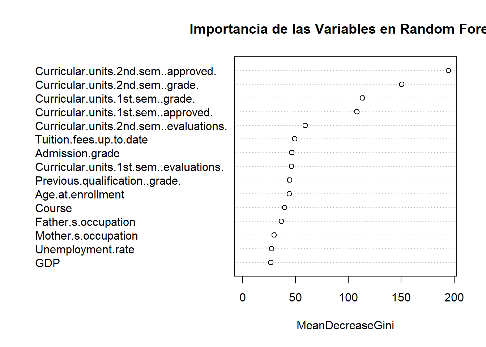
El análisis de la importancia de variables en el modelo de random forest confirma que el rendimiento académico es el principal factor explicativo del abandono universitario, destacando especialmente el número de asignaturas aprobadas y las calificaciones obtenidas en el segundo semestre. Variables administrativas como el pago de tasas y la participación en evaluaciones contribuyen de forma complementaria, mientras que características previas del estudiante, como la nota de acceso, la formación anterior o la edad en el momento de matrícula, presentan una influencia significativamente menor. Estos resultados refuerzan la idea de que el riesgo de abandono se manifiesta principalmente a través del desempeño académico durante el primer año.
# Análisis del error out-of-bag
plot(rf_modelo)
legend(
"topright",
legend = c(
"Error global",
levels(as.factor(y_train))
),
col = c("black", "red", "green", "blue"),
lty = 1,
lwd = 2,
bty = "n"
)
El análisis del error out-of-bag del modelo de random forest muestra que el clasificador identifica con alta fiabilidad tanto a los estudiantes que finalmente se gradúan como a aquellos que abandonan los estudios, que constituyen el principal objetivo del análisis. Por el contrario, la clase correspondiente a estudiantes aún matriculados presenta una mayor tasa de error, lo cual es coherente con su carácter intermedio y menos definido. Asimismo, se observa que el error del modelo se estabiliza a partir de aproximadamente 40 árboles, indicando que un mayor número de árboles no aporta mejoras significativas en el rendimiento.
4.5 Conclusiones
Comparando los modelos de K-means, KNN, árbol de decisión y random forest, observamos que tanto el árbol de decisión como el random forest ofrecen un rendimiento superior en la clasificación del abandono universitario. El árbol de decisión destaca por su interpretabilidad y rapidez en la identificación de estudiantes en riesgo, basándose principalmente en el rendimiento académico del primer año. Por otro lado, el random forest proporciona una mayor robustez y precisión, aunque a costa de una menor transparencia en la toma de decisiones. Ambos modelos superan significativamente a K-means y KNN, que presentan limitaciones en la captura de las complejas interacciones entre variables. En resumen, para aplicaciones prácticas donde la interpretabilidad es clave, el árbol de decisión es preferible, mientras que para maximizar la precisión predictiva, el random forest es la mejor opción.
4.6 Simplificación del modelo random forest.
Vamos a reentrenar el random forest con solo las 11 variables más importantes ya que son las meramente académicas y por tanto más faciles de conseguir por parte de la universidad para ver si el rendimiento no empeora demasiado. Este modelo pretende que no sea necesario disponer de tantos datos para predecir el desempeño de un estudiante.
# Seleccionar las 10 variables más importantes
importancia_variables <- data.frame(importance(rf_modelo, type = 2))
top_variables <- importancia_variables %>%
arrange(desc(MeanDecreaseGini)) %>%
slice(1:11)
top_variables <- rownames(top_variables)
# Reentrenar el modelo Random Forest con las 10 variables más importantes
rf_modelo_simplificado <- randomForest(x = X_train[, top_variables], y = as.factor(y_train), ntree = 50)
# Predecir en los datos de validación
pred_rf_simplificado <- predict(rf_modelo_simplificado, newdata = X_validation[, top_variables])
# Evaluar el modelo simplificado
evaluar_clasificador_binario(
pred = pred_rf_simplificado,
real = y_validation,
pos_pred = c("Graduate","Enrolled"),
neg_pred = c("Dropout"),
pos_real = c("Graduate","Enrolled"),
neg_real = c("Dropout")
)$matriz_confusion
Predicción
Real Positivo Negativo Sum
Positivo 700 52 752
Negativo 100 237 337
Sum 800 289 1089
$metricas
precision recall f1_score accuracy error specificity
0.8750000 0.9308511 0.9020619 0.8604224 0.1395776 0.7032641
npv
0.8200692 #Probamos el modelo a lo bruto con los outliers también
table(validation_data[setdiff(rownames(validation_data),rownames(datos_numericos_validation)),]$Target)
Dropout Enrolled Graduate
20 8 15 pred_rf_simplificado_solo_outliers <- predict(rf_modelo_simplificado, newdata = validation_data[setdiff(rownames(validation_data),rownames(datos_numericos_validation)),top_variables])
#Guardamos el modelo de random forest simplificado para usarlo en la app Shiny
saveRDS(rf_modelo_simplificado, file = "rf_modelo_simplificado.rds")5 Testing final
A continuación se presentan el rendimiento final del modelo de random forest normal y simplificado al aplicarlo a un conjunto de datos de prueba independiente, eliminando los outliers.
# Preparar los datos de prueba
cols <- unlist(top_variables[c(1:5,8,11)])
IDS_outliers_test<-rownames(test_data)[
rowSums(test_data[, cols[-length(cols)]] == 0) == length(cols)-1 &
test_data[, cols[length(cols)]] == 171
]
test_data_limpio <- test_data[!rownames(test_data) %in% IDS_outliers_test, ]
#Probamos el random forest normal y medimos las metricas
pred_rf_test <- predict(rf_modelo, newdata = test_data_limpio[, c(1:7, 9:36)])
evaluar_clasificador_binario(
pred = pred_rf_test,
real = test_data_limpio$Target,
pos_pred = c("Graduate","Enrolled"),
neg_pred = c("Dropout"),
pos_real = c("Graduate","Enrolled"),
neg_real = c("Dropout")
)$matriz_confusion
Predicción
Real Positivo Negativo Sum
Positivo 702 45 747
Negativo 81 248 329
Sum 783 293 1076
$metricas
precision recall f1_score accuracy error specificity
0.8965517 0.9397590 0.9176471 0.8828996 0.1171004 0.7537994
npv
0.8464164 #Ahora con el random forest simplificado
pred_rf_simplificado_test <- predict(rf_modelo_simplificado, newdata =
test_data_limpio[, top_variables])
evaluar_clasificador_binario(
pred = pred_rf_simplificado_test,
real = test_data_limpio$Target,
pos_pred = c("Graduate","Enrolled"),
neg_pred = c("Dropout"),
pos_real = c("Graduate","Enrolled"),
neg_real = c("Dropout")
)$matriz_confusion
Predicción
Real Positivo Negativo Sum
Positivo 694 53 747
Negativo 88 241 329
Sum 782 294 1076
$metricas
precision recall f1_score accuracy error specificity
0.8874680 0.9290495 0.9077829 0.8689591 0.1310409 0.7325228
npv
0.8197279 Vemos que los resultados corresponden con lo esperado y el modelo simplificado tiene un rendimiento similar al completo aportando la ventaja de necesitar menos datos para hacer la predicción. y tener menos complejidad. Ambos modelos superan claramente a los modelos de K-means y KNN probados inicialmente con una precisión del 94% y 93% en cada caso y un error del 12% y 13%.
Para mejorar estas métricas sería necesario disponer de más datos de estudiantes y de otras variables que puedan influir en el abandono como por ejemplo datos socioeconómicos o de integración social en la universidad.
En el archivo formulario.qmd se presenta una aplicación Shiny que permite introducir los datos de un estudiante y predecir si abandonará o no sus estudios utilizando el modelo de random forest simplificado entrenado en este análisis.